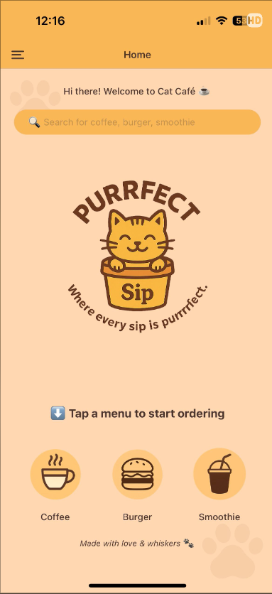
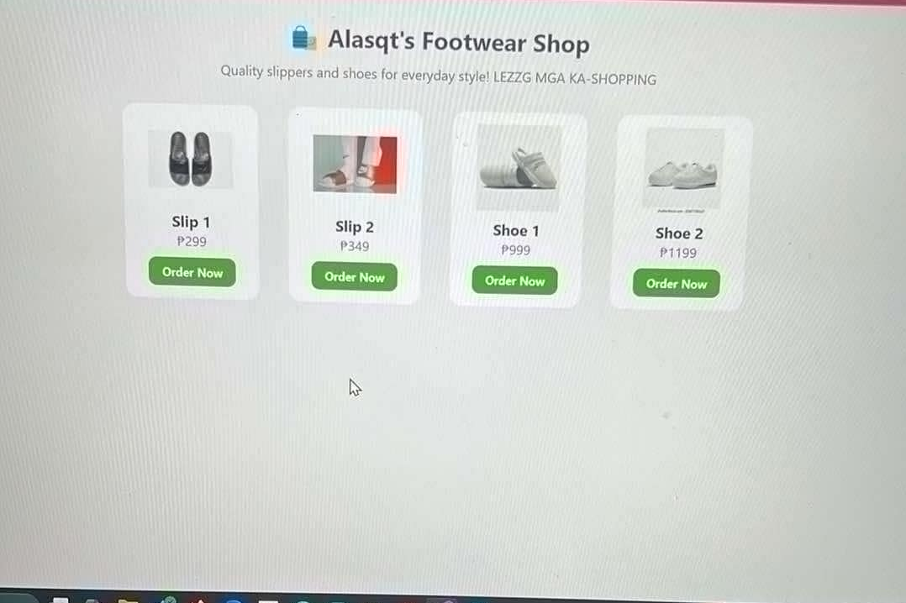
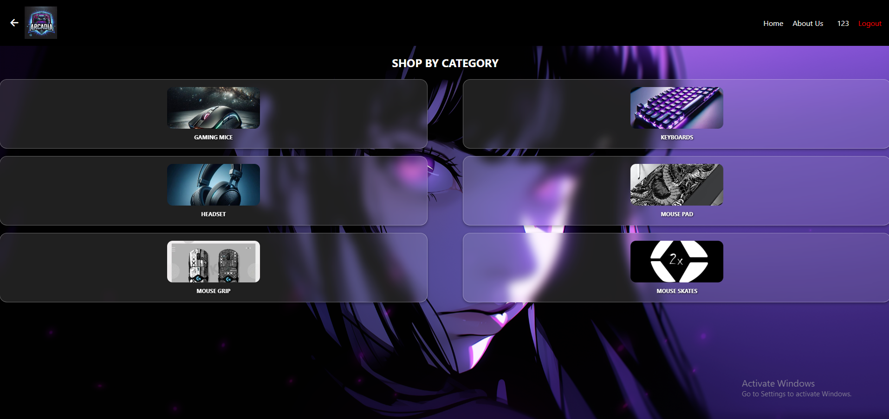

About Us
- Harold Isaiah Carag 
- Ace Villegas 
- Justin Dimla 
BSIT Students, College of Engineering and Computer Technology, Wesleyan University-Philippines
With Data Analytics for BSIT CECT, Wesleyan University-Philippines
BSIT Students, College of Engineering and Computer Technology, Wesleyan University-Philippines